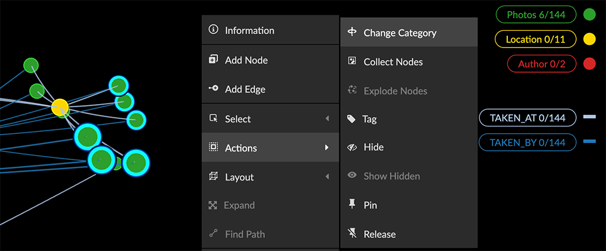
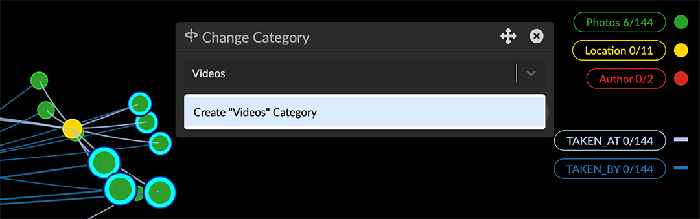
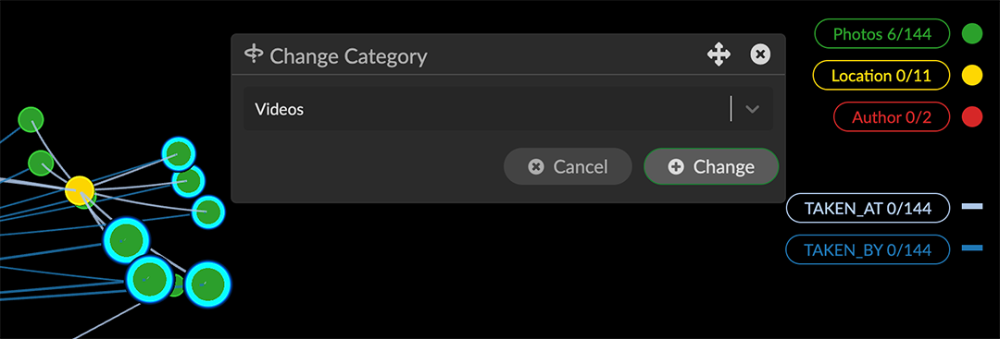
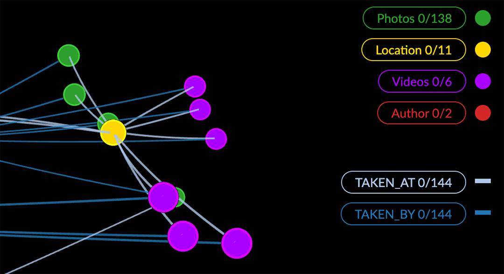

Change Category, Relationship, and Property labels At any time you can Relabel (i.e. rename) a Category, Relationship, or Property. Change the category of selected nodes to a new or existing category. Rename a category, relationship, or property In the Enhanced Table, you can edit most of the elements of your graph data, including the labels for categories, relationships, and properties. You may want to do this, for example, if existing labels are too similar or not descriptive enough. Renaming takes immediate effect. Before editing, save a View or take a Snapshot so that you can revert the changes if necessary. To rename a category or relationship: Double click in an empty are of the graph to deselect all the data. Open the Table panel, and click any category bubble to open its table. Scroll to the bottom of the table and click Enhanced Table. The enhanced table displays with its Category tab open. Either: Double-click a category label (e.g. Location). Click the Relationship tab and double-click a relationship label. Enter a new category (or relationship) name and hit return. To rename a property: Open the Enhanced Table Click the category or relationship bubble to display its table. Click the settings icon next to a property’s column heading (its current name) and select Rename. Enter a new name and click Save. Change the category of selected nodes The right-click Actions > Change Category option lets you immediately change the category of any selection of nodes. You can select an existing category, or create a new one. This is useful when combining equivalent data imported from a variety of different sources, or when data needs to be categorized in greater detail. Actions>Change Category cannot be reverted. Before using it, save a data View, snapshot, or .GXRF file so that you can undo a mistaken change if necessary. To change the category of selected nodes: Select nodes using any method. Right-click and choose Actions> Change Category.  In the Change Category dialog, use the dropdown menu to select the new label, or enter a name for a new category.  Click Change to apply the change. Click Cancel or the x to exit the dialog without changing the label.  The category is changed. Any properties of the changed nodes not present in the target category are transferred. 